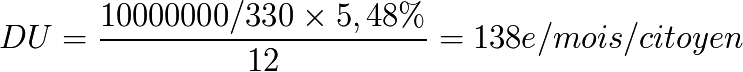
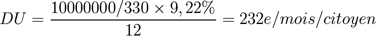
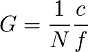

Considérations générales
Quelques ordres de grandeur
Une zone économique comme la zone € a une espérance de vie moyenne de 80 ans en 2012, on obtient :

On peut dès lors pour donner une idée des ordres de grandeur, faire un comparatif sur des données réelles en 2010. Prenons l’exemple de la zone euro avec 10 000 milliards d’euros et 330 millions de citoyens le Dividende Universel optimisé serait alors compris entre :

et

Donc entre 552 € / mois et 928 € / mois pour une famille de 4 personnes.
La réalité montre des disparités colossales au sein de la zone quant à l’existence d’un revenu minimum individuel puisqu’en France ou en Allemagne on atteint 450 € / mois / personne de façon conditionnelle (condition d’âge, de ressource etc...) quand dans des pays comme la Roumanie ou la Bulgarie c’est le salaire minimum qui est de 130 € / mois sans qu’il y ait de monnaie individuellement allouée.
Nous sommes en Europe dans un cas d’asymétrie spatiale forte qui a pour effet de créer de grandes disparités et un transfert d’activités économiques des pays à forte allocation monétaire individuelle (découragés à produire biens et services monétisés), vers les pays à quasi zéro allocation monétaire individuelle. Cela revient à ne pas reconnaître l’égalité entre individus au sein d’une zone économique commune.
Si les tenants et les aboutissants de la création monétaire avaient été présentés aux individus de cette communauté, et leur assentiment personnel exigé pour mettre en place cette monnaie commune, ils auraient réalisé les difficultés posées en matière d’éthique et d’équité, de symétrie devant la création monétaire, et ils ne l’auraient sûrement pas acceptée dans de telles conditions.
Aux États-Unis, le Dividende Universel optimal se calcule pour environ 15 000 milliards de $ en circulation et 310 millions d’habitants pour 80 ans d’espérance de vie. Il serait compris entre :

Ceci étant noté, nous verrons plus tard que l’installation d’un Dividende Universel peut être progressive et n’a pas à se fixer sur un état monétaire donné pour se mettre en place. Les chiffres donnés ici on pour but d’expliquer le mécanisme, et donner des ordres de grandeur à l’instant où le calcul est effectué. Il ne faut pas oublier que la masse monétaire n’est pas une quantité fixe, elle évolue dans le temps et dans l’espace, et toute mesure doit être comprise comme n’ayant de valeur que locale et instantanée.
NB : Yoland Bresson remarque par ailleurs que le PIB vaut entre 2 et 3 fois la masse monétaire selon les phases, et qu’on peut envisager qu’un revenu individuel inconditionnel (Revenu d’Existence ou Revenu de Base ou Allocation Universelle) soit basé sur 2 à 3 fois le Dividende Universel, soit en 2010 environ 400 € / mois / Citoyen pour l’Europe ou 600 $ / mois / Citoyen aux États-Unis. On fait alors une différence entre le Dividende Universel en tant que création monétaire individuelle et le Revenu de Base, qui comprend le Dividende Universel et une part de redistribution. On peut aussi appliquer le principe de symétrie temporelle non pas à la seule monnaie immatérielle circulante mais aussi aux droits de propriétés de la matière originelle dans son ensemble, ce qui conduit à au moins douber la valeur transmise dans le temps si l’on considère que la monnaie reflète la valeur existante. Mais cette considération sort du strict cadre de la TRM proprement dite.
Ces remarques associées à la plage de valeurs possibles pour « c », donnent une plage de valeurs acceptables en 2012 pour un Revenu de Base (et pas un seul Dividende Universel) entre 200 € et 800 € / mois / Citoyen pour l’Europe et 300 $ à 1200 $ / mois / Citoyen aux États-Unis. Ces données de 2010/2012 seront évidemment à recalculer selon les variations de la population, de l’espérance de vie et de la masse monétaire.
À propos de la valeur
L’argument selon lequel l’inflation de la masse monétaire serait contraire à l’éthique, parce qu’elle dévaloriserait ce que possèdent les individus ne tient pas devant l’analyse tant globale que locale.
Tout d’abord l’argument de l’espérance de vie, et de la création monétaire équitable envers toutes les générations balaye l’argument d’un point de vue temporel devant nos descendants qui n’ont pas à être considérés comme exclus du processus à notre bénéfice.
Ensuite même d’un point de vue local l’argument ne tient pas devant une analyse fine.
Soit un individu ou un collectif d’individus « X » parmi les N de la zone économique qui possède une fraction f de la masse monétaire totale. X reçoit donc une fraction du dividende c / N ce qui fait que son ratio de « gain » monétaire personnel est de :

Soit :

Et donc :

Ce qui fait que son ratio de gain personnel G sera supérieur à c s’il possède moins de M/N de monnaie, égal à c, s’il possède exactement M/N de monnaie, et inférieur à c s’il possède plus de 1/N de monnaie.
C’est donc selon la quantité de monnaie possédée qu’on peut estimer être gagnant monétairement ou pas.
Exemple numérique : A possède 50, B possède 200 il y a d’autres individus dans cette communauté monétaire et la masse monétaire est de 1 000, pour une communauté de 10 membres. Admettons une espérance de vie telle que le DU soit de 5 % / an.
Le Dividende Universel annuel alloué à chacun sera de 5 % x 1000 / 10 = 5. A aura alors 55, et B 205. Localement A a bénéficié de 5/50 = 10 % de monnaie supplémentaire, et B de seulement 5/200 = 2,5 %. Globalement A possède désormais par ailleurs 55 / 1050 = 5,24 % de la masse monétaire, au lieu de 50 / 1000 = 5 % et B possède 205 / 1050 = 19,52 % de la masse monétaire contre 200 / 1000 = 20 % avant la distribution. B a vu sa part monétaire diminuer car il possédait avant la distribution plus de 1000 / 10 = 100 de monnaie, tandis que pour A, en dessous de cette moyenne, c’est l’inverse qui se produit.
Mais par ailleurs si X possède plus de M/N de monnaie, donc plus de monnaie que la moyenne, la masse monétaire qu’il ne possède pas sera en moyenne, par individu, mécaniquement inférieure à M/N, donc les prix ajustés à la baisse par déflation locale.
Aussi, bien que sa quantité de monnaie relative n’augmente pas aussi vite que la masse globale, il peut bénéficier d’une baisse des prix. Par ailleurs s’il possède moins de M/N de monnaie, les prix pourront avoir tendance à monter pour la raison inverse, et ce qui est gagné relativement à la monnaie sera perdu relativement aux valeurs.

Exemple graphique avec trois individus, ayant une répartition monétaire de 300, avant Dividende Universel, puis après. L’évolution de leur situation relative est différente selon la part relative de monnaie possédée par chacun.
En théorie relative où l’analyse comprend la relation entre les parties et le tout, Local + Non Local = Global. Cela signifie que tout ce qui est choisi individuellement a un effet inverse sur le reste de l’économie. Si la monnaie se stocke c’est une force qui a tendance à faire baisser les prix là où elle se raréfie et si la monnaie circule, c’est une force qui a tendance à les faire monter (à production constante, hors innovation. L’innovation empêchant la comparaison dans le temps, cf principe de relativité).
Enfin la valeur n’est évidemment pas la monnaie. La valeur à laquelle X peut prétendre, comprend les biens qu’il possède, ce qui inclut certes la monnaie, mais aussi les biens qu’il pourra acheter avec sa monnaie, ainsi que la monnaie qu’il pourra récupérer en vendant ses biens.
L’arbitrage que pourrait donc faire X dépend donc entièrement de ses choix personnels quant à la quantité de monnaie qu’il compte inclure dans ses biens ou pas, les biens qu’il compte garder, vendre, ou acheter, et certainement pas uniquement de la quantité de monnaie qu’il possède. D’autant que dans une économie innovante où les membres sont incités à créer de nouveaux biens et services, ce qui sera la valeur de demain est dans une grande partie totalement imprévisible.

Mais par ailleurs, avant et après la distribution d’un dividende universel, les prix des biens non-monétaires pourront eux-aussi évoluer. Il n’est donc pas de conclusion possible simple et généralisable quant à la distribution monétaire, si ce n’est qu’elle n’est ni favorable ni défavorable pour tous, tout le temps, mais que son effet bénéfique ou non dépend de l’individu concerné et de comment le surplus monétaire sera distribué d’une part, et utilisé par les individus d’autre part.
Aussi il n’existe aucune certitude possible quant à ce qu’il conviendrait de faire dans le cadre de la « protection » de son capital, qui est donc ici aussi une valeur purement relative (le douanier Rousseau aurait été étonné de connaître l’estimation de son capital faite en 2010, et Maxwel encore plus s’il avait gardé des « droits de propriété intellectuelle » sur sa fabuleuse théorie de l’électromagnétisme).
Aussi le Dividende Universel ne préjuge absolument pas, en terme de gain ou de perte personnels, de la « valeur ». Ce sont les choix individuels qui déterminent l’impact que pourra avoir l’augmentation de la masse monétaire sur le panier individuel de valeurs.
À propos de la symétrie de la valeur apportée par les individus
Il convient de bien comprendre l’argument de la symétrie dans toutes ses composantes. Les membres d’un système monétaire en place ont bénéficié d’une création monétaire initiale, mais n’en sont pas pour autant « riches » de cette monnaie particulière. Ils sont surtout riches de leurs biens, de leurs compétences, de leur nature fondamentale d’être humain capable d’échanger avec ses semblables et d’avoir un avis unique sur ce qui est valeur ou pas. Or la valeur qui existe au sein de cette communauté d’individus n’a aucune raison de primer sur la valeur estimée par les futurs entrants.
Ceci est vrai tant spatialement que temporellement. C’est-à-dire que quand deux communautés décident de s’intégrer l’une l’autre, et donc de fusionner leur monnaie, l’une n’a pas à primer sur l’autre quant à la création monétaire par individu, et quand une génération en remplace une autre, il n’y a pas non plus à supposer que l’estimation des valeurs réalisée par la génération suivante serait moins légitime que celle de la précédente.
C’est en cela qu’il s’agit d’une théorie relative de la monnaie. Il n’y aucun référentiel individuel privilégié quant à la mesure de la valeur, chaque individu constituant un repère acceptable pour en avoir une mesure, et donc seule la monnaie, contractuellement admise par les membres de la zone économique constitue une mesure commune de valeur.
De la même façon en physique relativiste, on a entre deux repères relatifs un seul étalon de mesure commun qui est la vitesse de la lumière, à partir duquel les observateurs s’accordent, et transforment leur vision des phénomènes (temps, espace, etc...) selon le repère choisi. Or cette mesure bien que commune n’est en rien « absolue » du fait de l’expansion de l’Univers. La vitesse de la lumière rapportée au volume de l’Univers diminue dans le temps.
Il en est de même pour la monnaie qui accompagne une économie en croissance dans l’espace-temps. Les générations humaines qui se succèdent prennent appui l’une sur l’autre pour créer des valeurs supérieures ou différentes dans un processus d’amélioration quantitatif et/ou qualitatif (ce qui peut aussi se traduire aussi par une réduction de certains flux par optimisation de leur usage).
Même dans un cas de stagnation voire de régression (on peut penser au cas des Amishs d’Amérique du Nord qui ont refusé d’intégrer le « progrès » technique dans leur communauté), la communauté s’enrichit en terme de connaissance de l’expérience vécue, ce qui sur le long terme constituera sans aucun doute une valeur liée au savoir expérimental ainsi acquis quel qu’en soit l’interprétation. Il ne doit faire aucun doute que la valeur économique pour les Amish est très sensiblement différente de celle d’une autre communauté.

Fermier Amish fertilisant son champ (wikimedia)